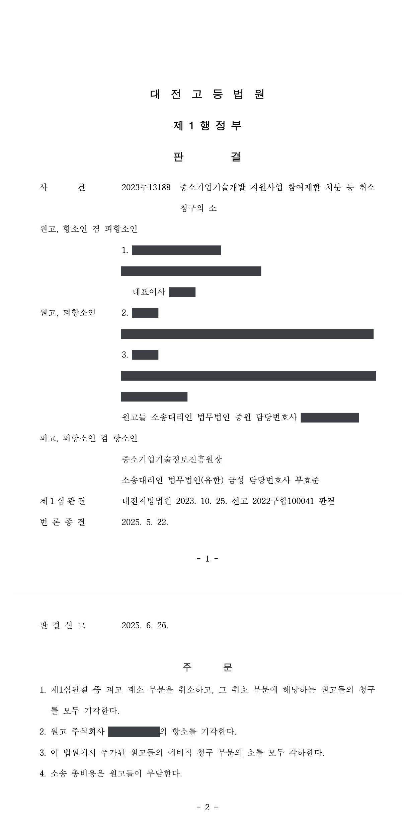

국가연구개발사업 참여제한·출연금 환수처분 취소소송 (1·2심)
대전지방법원 2022구합100041 · 대전고등법원 2023누13188 · 담당변호사 부효준
판결문


사건의 요지
중소기업기술개발 과제의 수행과 연구개발비 사용을 둘러싼 5년 참여제한처분과 출연금 환수처분이 다투어진 사건입니다. 1심은 참여제한처분만 취소했고, 항소심은 1심의 피고 패소 부분을 취소하고 원고들의 청구를 모두 받아들이지 않았습니다.
사건의 주요 내용
주형·금형을 제조하는 원고 회사는 2017년 중소기업기술혁신개발사업(혁신형기업기술개발) 과제에 선정되어, 의료영상용 X선관에 쓰이는 내열 합금 타겟 소재를 개발하는 과제를 24개월(2017년 5월~2019년 5월) 동안 수행하면서 정부출연금 5억 원을 지원받는 협약을 전문기관과 체결하였습니다. 원고 회사는 같은 시기에 다른 전문기관이 관리하는 지역특화산업육성사업에서도 X선관용 내열 소결성형 소재 타겟을 개발하는 과제를 수행하고 있었습니다.
원고 회사는 2019년 7월 제출기한 안에 최종보고서를 전산등록하였습니다. 전문기관은 2019년 11월 두 과제를 대상으로 특별점검을 실시한 뒤, 과제의 진도보고서와 최종보고서가 지역특화사업 과제의 최종보고서와 동일한 실험 데이터·시제품 사진 등으로 구성되어 허위 작성 내지 (자가)표절에 해당한다는 이유로 과제를 '중단'으로 판정하였고, 원고들이 수정·보완한 보고서를 내며 이의신청하였으나 이의신청 특별평가위원회도 자가표절 판정을 유지하였습니다.
전문기관의 장은 제재조치위원회 심의를 거쳐 2021년 10월 '최종보고서 표절 및 과제 중복'을 사유로 구 「중소기업 기술혁신 촉진법」 제31조·제32조와 운영요령 [별표 3]에 따라 원고 회사에 참여제한 5년과 정부출연금 499,127,874원의 환수처분을, 대표자와 과제책임자에게 각 참여제한 5년의 처분을 하였습니다. 원고들은 각 처분의 취소를 구하는 소송을 제기하였고, 부효준 변호사는 1심과 항소심에서 전문기관의 장을 대리하였습니다.
쟁점
- 같은 회사가 서로 다른 사업에서 수행한 두 과제의 개발목표·방법·내용이 상당 부분 유사한 경우 '중복 수행 등 부정한 방법을 사용하여 과제 수행기관으로 선정된 경우'에 해당하는지
- 자신이 수행한 다른 과제의 최종보고서 내용을 출처 표시 없이 그대로 옮긴 최종보고서가 '자기표절'로서 연구부정행위에 해당하는지, 표절 여부를 제출기한 안의 최종보고서와 기한 뒤의 수정본 가운데 무엇을 기준으로 판단하는지
- 두 처분사유를 합산한 참여제한 5년과 출연금 전액 환수가 재량권을 일탈·남용한 것인지, 그리고 이의신청 결과 통지가 항고소송의 대상인 처분인지
원고의 주장
- 특별평가위원회와 이의신청 특별평가위원회가 두 과제의 중복 수행을 문제 삼지 않았고, 두 과제는 개발목표·개발방법·개발내용이 서로 달라 중복 수행이 아니므로 이 부분 처분사유는 존재하지 않는다고 주장하였습니다.
- 이 사업은 보고서 전산등록 뒤 현장점검 때까지 추가 시험결과를 반영하여 최종보고서를 수정·보완하는 것이 통상의 절차였으므로, 표절 여부는 제출기한 뒤 수정·보완하여 제출한 2019년 11월 최종보고서를 기준으로 판단하여야 하고 그 보고서는 표절이 아니라고 주장하였습니다. 항소심에서는 표절검사 결과 표절률이 10%에 불과하고 법원 전문심리위원의 전문성도 부족하다고 다투었습니다.
- 항소심에서 추가로, 법령상 연구개발을 성실하게 수행한 경우 환수금액을 감액할 수 있으므로 구체적 타당성을 따지지 않고 출연금 전액을 환수한 것은 재량권을 일탈·남용한 것이라고 주장하였고, 이의신청 결과 통지가 새로운 처분이라면 그 취소를 구한다는 예비적 청구를 추가하였습니다.
부효준 변호사의 주장
- 두 과제의 사업계획서와 최종보고서를 비교하면 최종 개발목표·평가항목·개발내용이 상당 부분 유사하고 완전히 동일한 항목도 있으므로, 관리지침의 중복성 판단기준에 따라 '중복 수행 등 부정한 방법을 사용하여 과제 수행기관으로 선정된 경우'에 해당한다고 주장하였습니다.
- 제출기한 안에 제출된 최종보고서의 사진·도면·수치·주요 내용이 지역특화사업 과제 최종보고서와 다수 동일하고 출처 표시도 없으므로, 대법원 판례가 말하는 '자기표절'로서 연구부정행위에 해당하며, 운영요령상 최종평가는 제출기한 안에 제출된 최종보고서와 증빙자료를 기준으로 하는 것이므로 기한 뒤의 수정본을 기준으로 판단할 수 없다고 주장하였습니다.
- 운영요령 [별표 3]은 표절과 중복 수행의 참여제한 기간을 각 3년으로 하고 둘 이상의 사유가 있으면 5년을 한도로 합산하며 출연금은 전액 환수하도록 정하고 있으므로, 참여제한 5년과 출연금 전액 환수는 처분기준에 부합하여 재량권 일탈·남용이 없다고 주장하였습니다.
법원의 판단
1심은 표절은 인정하면서도 중복 수행은 처분사유로 인정하지 않았습니다. 표절만으로는 참여제한 기간이 3년인데 두 사유를 전제로 5년을 부과한 것은 비례원칙에 어긋난다고 보아 참여제한처분을 모두 취소하였고, 표절의 경우 출연금 환수범위가 전액이므로 환수처분은 적법하다고 보아 원고 회사의 나머지 청구는 받아들이지 않았습니다.
항소심은 1심의 결론을 뒤집었습니다. 중복과 표절 여부는 전문적·기술적 사항이어서 전문가들의 평가가 존중되어야 하고, 법원 전문심리위원도 두 과제의 소재 배합비율과 소결공정이 유사하여 중복성이 있다는 의견을 밝혔으며, 모든 부분이 완전히 일치하지 않더라도 상당 부분이 중복되어 정부출연금의 분배에 지장이 생긴다면 중복 수행에 해당한다고 보았습니다. 표절에 관하여는 선행 저술을 밝히지 않는 '자기표절'도 연구부정행위라는 대법원 판례(2016. 10. 27. 선고 2015다5170 판결)를 적용하였고, 최종평가는 제출기한 안에 제출된 최종보고서를 기준으로 하면 되며 수정본을 기준으로 보아도 여전히 표절이라고 판단하였습니다.
재량권에 관하여는 운영요령 [별표 3]이 재량준칙으로서 헌법·법률에 어긋나거나 객관적으로 불합리하지 않은 한 존중되어야 한다는 대법원 판례(2022. 7. 28. 선고 2022두31822 판결)를 들어, 두 사유를 5년 한도에서 합산한 참여제한과 출연금 전액 환수는 처분기준에 부합하고 제재가 과하지 않다고 보았습니다. 이에 따라 1심판결 중 피고 패소 부분을 취소하여 원고들의 청구를 모두 받아들이지 않았고, 원고 회사의 항소는 이유 없다고 보았으며, 항소심에서 추가된 이의신청 결과 통지 취소의 예비적 청구는 그 통지가 처분이 아니라는 이유로 각하하였습니다. 소송 총비용은 원고들이 부담하게 되었습니다.
자신의 선행 저술의 존재를 아예 밝히지 아니하는 경우에는 학계, 독자 등이 그 선행 저술 부분까지도 후행 저술의 연구 성과인 것처럼 기만당하게 되어 후행 저술의 연구업적에 대한 과장된 평가가 이루어지고 후행 저술에 대한 적정한 검증이 이루어질 수 없게 되므로, 이는 이른바 ‘자기표절’로서 비전형적 표절 내지 표절에 준하는 연구부정행위로 평가할 수 있다(대법원 2016. 10. 27. 선고 2015다5170 판결 등 참조).
대전고등법원 2023누13188 판결 이유 '4. 가. 2) 관련 법리 — 나)'
중소기업기술개발 지원사업 관리지침은 개발목표, 개발방법, 개발내용 등의 판단요소가 동일하거나 거의 유사한 경우 중복과제로 판단하도록 하고 있다. 이 사건 사업과제와 지역특화사업 과제의 사업계획서, 최종보고서를 살펴보면, 최종 개발목표, 평가항목, 개발내용이 상당 부분 유사하고 완전히 동일한 항목도 있다. 원고들의 주장처럼 이 사건 사업과제와 지역특화사업 과제 사이에 일부 차이가 나는 부분도 있으나, 구 중소기업기술혁신법 시행령이 ‘중복 수행’ 과제에 관한 정부출연금 환수를 규정한 이유가 ‘한정된 정부출연금의 공정하고도 효율적인 분배’에 있다는 점을 고려하면, 반드시 대상과제의 모든 부분이 완전히 일치해야만 ‘중복 수행’ 과제에 해당한다고 볼 것은 아니다. 새로운 과제의 상당 부분이 기존 과제의 내용과 중복되어 정부출연금의 분배에 지장이 생긴다고 볼 수 있다면, 새로운 과제는 ‘중복 수행’ 과제에 해당한다고 평가할 수 있다.
대전고등법원 2023누13188 판결 이유 '4. 가. 3) 구체적 판단 — 다)'
원고들의 주장에 따를 경우 구 운영요령이 정한 제출기한 내에 제출된 최종보고서와 증빙자료는 형식적인 것에 불과하고 기한을 한참 도과한 후에 최종적으로 제출한 자료를 토대로 판단해야 한다는 것인데, 이는 위와 같이 제출기한과 후속 절차를 구체적으로 규정해 놓은 취지에 반한다. 더욱이 피고가 최종보고서에 대하여 수정ㆍ보완을 요청할지 여부는 재량에 달려 있으므로, 제출기한 내에 제출된 최종보고서에 대하여 수정ㆍ보완할 기회를 부여할 의무가 있다고 볼 수도 없다.
구 운영요령이 정한대로 관리기관의 장인 피고는 제출기한 내에 제출된 2019. 7. 9. 자 최종보고서를 기준으로 현장실태조사를 실시하고, 이를 기준으로 최종평가를 할 수 있다고 보아야 한다. 최종보고서 제출 이후에도 수정ㆍ보완하는 것이 가능하다는 이유만으로 피고가 수정ㆍ보완을 요청하지 않은 채 2019. 7. 9. 자 최종보고서를 기준으로 평가한 것이 위법하다고 볼 수 없다.
대전고등법원 2023누13188 판결 이유 '4. 가. 3) 구체적 판단 — 마)'
※ 판결 이유 가운데 이 사건의 판단 기준이 된 부분을 그대로 옮긴 것으로, 당사자 이름 등은 가렸습니다.
이 사건이 보여 주는 것
한 기업이 비슷한 기술을 여러 사업의 과제로 나누어 수행하는 경우, 결과물과 특허 출원 내용이 다르더라도 개발목표·방법·내용의 상당 부분이 겹치면 '중복 수행'으로 평가될 수 있고, 다른 과제 보고서의 사진·도면·실험데이터를 출처 표시 없이 다시 쓰는 것은 자신의 저술이라도 '자기표절'이라는 연구부정행위가 됩니다. 1심은 중복 수행을 인정하지 않아 참여제한을 취소하였지만 항소심에서 전문심리위원의 의견 등을 토대로 결론이 뒤집힌 데서 보듯, 전문적 판단에 대한 법원의 존중 범위는 넓습니다.
최종평가는 운영요령이 정한 제출기한 안에 낸 최종보고서와 증빙자료를 기준으로 이루어지고 전문기관이 수정·보완 기회를 줄 의무도 없으므로, 제출 전에 보고서의 내용과 출처 표시를 점검해야 합니다. 또한 제재처분에 대한 이의신청이 받아들여지지 않았다는 결과 통지는 항고소송의 대상이 아니므로, 소송은 원처분을 대상으로 그 제소기간 안에 제기해야 합니다.
관련 법령구 중소기업 기술혁신 촉진법 제7조, 제20조, 제29조, 제31조 제1항 제6호, 제32조 · 구 중소기업 기술혁신 촉진법 시행령 제5조, 제19조, 제20조 제2항·제4항, 제21조 제1항, [별표 2] · 구 중소기업기술개발 지원사업 운영요령 제24조, 제25조, 제30조 제1항 제6호, 제31조, [별표 3] · 중소기업기술개발 지원사업 관리지침(중복성 검토기준) · 행정기본법 제36조 제4항 · 행정소송법 제8조 제2항, 민사소송법 제420조
관련 단어참여제한출연금 환수연구부정행위자기표절과제 중복 수행최종보고서 허위 작성특별평가전문심리위원중소기업 기술혁신 촉진법 제31조운영요령 별표 3재량준칙이의신청 결과 통지 처분성혁신형기업기술개발사업항소심처분 적법각하
비슷한 처분을 받으셨다면
국가연구개발 제재처분은 사전통지를 받은 날부터 20일 이내에 재검토 요청 의견을 내고, 처분이 있음을 안 날부터 90일 이내에 취소소송을 제기해야 합니다. 처분서나 사전통지서를 받은 날짜부터 확인해 드립니다.